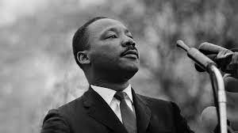

Martin Luther King Jr was born in January 15, 1929 and died in April 4, 1968 he was an American Baptist minister, activist, and political philosopher who was one of the most prominent leaders in the civil rights movement from1955 until his assassination in 1968. A Black church leader and a son of early civil rights activist and minister Martin Luther King Sr., King advanced civil rights for people of color in the United States through nonviolence and civil disobedience. Inspired by his Christian beliefs and the nonviolent activism of Mahatma Gandhi, he led targeted, nonviolent resistance against Jim Crow laws and other forms of discrimination in the United States.
He participated and led marches for the right to vote, desegregation, labor rights, and other civil rights.He was one of the leaders of the 1963 March on Washington, where he delivered his "I Have a Dream" speech on the steps of the Lincoln Memorial. The civil rights movement achieved pivotal legislative gains in the Civil Rights Act of 1964, Voting Rights Act of 1965, and the Fair Housing Act of 1968.In his final years, he expanded his focus to include opposition towards poverty and the Vietnam War. In 1968, King was planning a national occupation of Washington, D.C., to be called the Poor People's Campaign, when he was assassinated on April 4 in Memphis, Tennessee.
Martin Luther King kids were Martin Luther King III, Yolanda King, Dexter King, Bernice King.Martin Luther King III was born on October 23, 1957 is an American human rights activist, philanthropist and advocate.The oldest son of civil rights leaders Martin Luther King Jr and Coretta Scott King, King served as the 4th President of the Southern Christian Leadership Conference from 1997 to 2004.Yolanda Denise King was an African-American activist, actress and first-born child of civil rights leaders Martin Luther King Jr. and Coretta Scott King who pursued artistic and entertainment endeavors and public speaking. Her childhood experience was greatly influenced by her father's highly public activism. Dexter Scott King is an American civil rights and animal rights activist and the second son of civil rights leaders Martin Luther King Jr. and Coretta Scott King. King is also the brother of Martin Luther King III, Bernice King, and Yolanda King; and also grandson of Martin Luther King Sr.Bernice Albertine King is an American lawyer, minister, and the youngest child of civil rights leaders Martin Luther King Jr. and Coretta Scott King. She was five years old when her father was assassinated.